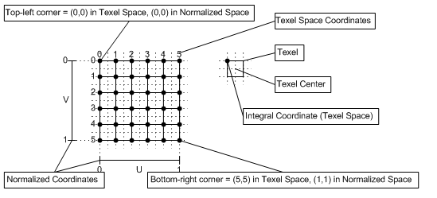

数据集规格
规格描述
PATH /workspace/exp_rcnn_pytorch/dataset_generation.ipynb
Info
采集程序中获取的数据格式：/ws/input & /ws/motion & /ws/target目录下分别存放1spp原始画面、1spp运动向量、64spp目标画面
-
将采集数据划分
- Train Dataset 70%
- Test Dataset 20%
- Validation Dataset 10%
-
Dataset Folder中含有多个Sequence Folder
-
Sequence Folder中含有多张图片
- 每张图片由1spp，64spp等组成
- 多张图片构成连续画面
- 图片从采集数据中截取
Info
由于1920x1080输入导致神经网络在显存中占用空间过大，因此决定将图片进行切分
数据集合规范
输入序列路径
path/to/dataset/[train/test/validation]/seq[seq_num]
序列中同一时刻的输入输出融合成单一图片，方便读取
- 256x256 1spp color
- 256x256 grid
- 256x256 64spp color
假设一个序列序号1-7，则目录下文件命名如下
path/to/dataset/[train/test/validation]/seq[seq_num]/[1-7]
Warning
grid 必须保存为浮点数
Pink Data转换为TensorFlow Dataset
import tensorflow as tf tf.enable_eager_execution() import numpy as np import random import pfm class PinkData(object): def __init__(self, path): self._path = path def get_size(self): return 10 # todo: remove magic number def load_data(self): data_index_set = [_ for _ in xrange(1, self.get_size()+1)] data = tf.data.Dataset.from_tensor_slices(data_index_set) data = data.map(self._transform_func) return data def _transform_func(self, index): input_data = tf.py_func(self._load_input_data, [index], tf.float32) target_data = tf.py_func(self._load_target_data, [index], tf.float32) return input_data, target_data def _load_input_data(self, index): file_dir = self._path+'/color/'+str(index)+'.pfm' return pfm.load_pfm(file_dir) def _load_target_data(self, index): file_dir = self._path+'/target/'+str(index)+'.pfm' return pfm.load_pfm(file_dir)
扩充Pink Data为Dataset
import os import time import matplotlib.pyplot as plt import numpy as np import shutil from enum import Enum ExtendMode = Enum('ExtendMode', ('Sequence', 'Mono')) class ExtendDataset(object): def __init__(self, mode): self._mode = mode self._pink_data = PinkData('/notebooks/workspace-ljk/pink-data') def gen_dataset(self): # slice the HD image into 256x256 self._slice_data() if self._mode == ExtendMode.Sequence: self._gen_sequnce() elif self._mode == ExtendMode.Mono: self._gen_mono() else: raise ValueError('invalid extend mode') def _slice_data(self): pass def _gen_mono(self): data = self._pink_data.load_data() index = 0 path_to_gen = self.create_directory() for color, target in data: bucket = np.concatenate((color.numpy(), target.numpy()), axis=0) # H-W-C FILE_NAME = path_to_gen +'/'+(str(index))+'.pfm' index = index + 1 pfm.save_pfm(FILE_NAME, image=bucket) def _gen_sequnce(self): pass def _data_augmentation(self): data_augmentation() def _create_directory(self): VERSION = 'temporary' GEN_PATH = os.getcwd()+'/dataset_'+VERSION if os.path.isdir(GEN_PATH): shutil.rmtree(GEN_PATH) os.mkdir(GEN_PATH) return GEN_PATH
切分
def slice_image(image, slice_size, stride): # image is a numpy array ordered by H W C # slice_size H W # calc how many slice in a image origin_height = image.shape[0] origin_width = image.shape[1] slice_height = slice_size[0] slice_width = slice_size[1] stride_height = stride[0] stride_width = stride[1] w_slice_count = (origin_width - slice_width)//stride_width + 1 h_slice_count = (origin_height - slice_height)//stride_height + 1 print 'slice count h,w', h_slice_count, w_slice_count slice_count = w_slice_count * h_slice_count image_list = [] for slice_index in xrange(slice_count): # calc by slice_index h_index = slice_index // h_slice_count w_index = slice_index % h_slice_count # use w_index, h_index & stride to calc the offset w_offset = h_index * stride_width h_offset = w_index * stride_height slice_image = image[h_offset:h_offset+slice_height, w_offset:w_offset+slice_width, :] image_list.append(slice_image) return image_list
切分motion
- 利用motion计算texel坐标
- transform scale成local texel
- local texel to local grid
利用OpenCV accumulate函数进行CG velocity到PyTorch grid的转换
图形采集程序中的MotionVecor并不符合PyTorch中grid_sample的要求。CPU处理图像能力有限，因此利用OpenCV图像操作，对原始MotionVector进行变换。
而转换的图像的规格要符合PyTorchgrid_sample方法的输入，本章先讲述PyTorch方法的输入要求，再讲述如何将MotionVector变换为该格式。
# 被证明可用的 gBufOut.grid = (calcMotionVector(pos.xy, vsOut.prevPosH, gRenderTargetDim) + pos.xy/gRenderTargetDim - 0.5) * 2;
PyTorch提供的内置的图像Warp方法
torch.nn.functional.grid_sample(input, grid, mode='bilinear', padding_mode='zeros')
Given an input and a flow-field grid, computes the output using input pixel locations from the grid.
Uses bilinear interpolation to sample the input pixels. Currently, only spatial (4 dimensional) inputs are supported.
For each output location, grid has x and y input pixel locations which are used to compute output.
grid has values in the range of [-1, 1]. This is because the pixel locations are normalized by the input height and width.For example, values: x: -1, y: -1 is the left-top pixel of the input values: x: 1, y: 1 is the right-bottom pixel of the input.
If grid has values outside the range of [-1, 1], those locations are handled as defined by padding_mode. Options are zeros or border, defining those locations to use 0 or image border values as contribution to the bilinear interpolation.
This function is used in building Spatial Transformer Network
采集数据的转换

计算global_grid
首先根据motion_vector计算出全图的Grid数据，这里需要格外定义pixel_map：
def get_pixel_map(size_h_w): height = size_h_w[0] width = size_h_w[1] pixel_map = np.zeros((height, width, 2)) for i in xrange(height): for j in xrange(width): pixel_map[i, j, :] = np.array([i, j]) return pixel_map size = np.array([1080, 1920]) pixel_map = get_pixel_map(size)
pixel coordinate转换为texel coordinate
def pixel_to_texel(pixel_map): pixel_center_offset = np.array([0.5, 0.5]) texel_map = (pixel_map + pixel_center_offset) / size return texel_map
texel coordinate坐标中心转换到texel中心，为转换为grid coordinate做准备
def texel_to_grid(texel_map): translation_offset = np.array([0.5, 0.5]) scale = np.array([2, 2]) texel_grid_mid = texel_map - translation_offset texel_grid_mid = texel_grid_mid * scale mid_to_grid_scale = 1.0*size/(size-1) grid = texel_grid_mid * mid_to_grid_scale return grid
计算local_grid | 图形切分
global_grid是针对1920x1080图片而言的，由于我们要将其切分为256x256的图片，global_grid需要转换为local_grid。
定义当前切分图像与左上角偏移量为offset，切分后大小为256x256
image_size = np.array([1920, 1080]) slice_size = np.array([256, 256]) offset = np.array([slice_size[0]*i, slice_size[1]*j]) sliced_grid = global_grid[offset[0]:offset[0]+slice_width, offset[1]:offset[1]+slice_height]
再通过sliced_grid计算local_grid
image_size = np.array([1920, 1080])
slice_size = np.array([256, 256])
offset = np.array([slice_size[0]*i, slice_size[1]*j])
def get_full_res_norm(pixel_w_h):
return (offset + slice_size/2.0f)/(image_size/2.0f)
def get_local_grid(sliced_grid):
sub_image_center = offset + 0.5 * slice_size
sub_image_center_norm = get_full_res_norm(sub_image_center)
sub_image_norm_factor = (slice_size/2.0f)/(image_size/2.0f)
return (sliced_grid - sub_image_center_norm)/ sub_image_norm_factor
local_grid = get_local_grid(sliced_grid)
Info
对于1920x1080图片，可以规则裁剪切分成28张256x256大小图片，后续数据增强中利用随机裁剪技术，可以任意取offset
数据增强
空间几何变换
图像旋转
M = cv2.getRotationMatrix2D(center, angle, scale) rotated = cv2.warpAffine(img, M, (w, h))
图像翻转
# flip img horizontally, vertically, # and both axes with flip() horizontal_img = cv2.flip( img, 0 ) vertical_img = cv2.flip( img, 1 ) both_img = cv2.flip( img, -1 )
缩放
裁剪
色域变换
HSV对比度变换
GrayScale
将图像从RGB颜色空间转换为灰度空间，通过某一通道与原图像混合。 RGB颜色扰动